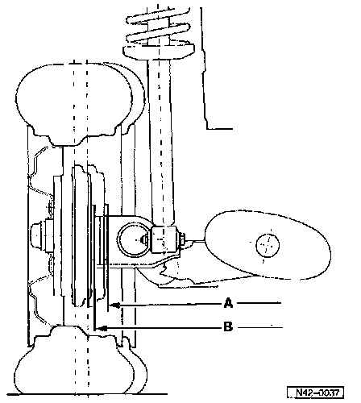

Changes to Rear Track
Changes were made in M.Y. 1994 on rear axles with 4-lug wheel mounting. The rear track has been reduced by 18 mm (0.71 in). Therefore, vehicles with 38 mm wheel offset, the track is the same for vehicles with 4-lug or 5-lug wheel mounting.The change-over will be introduced gradually.
Modifying the track affects the wheel clearance in the wheel housing and to the rear axle.
All original VW wheels for the Golf and Jetta can be installed on vehicles manufactured after 08/93.

Optional wheels with size and offset that are different from the standard wheel may have insufficient clearance.
A - 1358 mm (53.46 in) on rear axles with reduced track width
B - 1376 mm (54.17 in) on rear axles up to July 1993